일반기계기사 (2010-09-05 기출문제)
1과목: 재료역학
1. 원형단면의 단순보가 그림과 같이 등분포하중 ω=10N/m를 받고 허용응력이 800Pa일 때 단면의 지름은 최소 몇 mm가 되어야 하는가?
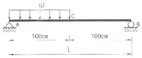
- 330
- 430
- 550
- 650
(정답률: 26%)

2. 그림과 같은 돌출보에서 B, C점의 모멘트 MB, MC는 각각 몇 N·m인가?
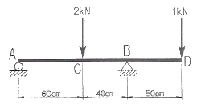
- MB=500, MC=1300
- MB=500, MC=180
- MB=800, MC=1300
- MB=800, MC=180
(정답률: 40%)
3. 그림과 같은 단주에서 편심거리 e에 압축하중 P=8kN이 작용할 때 단면에 인장하중이 생기지 않기 위한 e의 한계는 몇 cm인가?
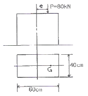
- 8
- 10
- 12
- 14
(정답률: 43%)
4. 전체 길이가 L인 외팔보에서 B점에서 모멘트 MB가 작용할 때, B점에서의 반력의 크기는?
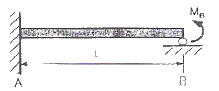
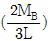
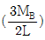
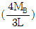
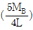
(정답률: 41%)
5. 다음 그림과 같이 3개의 풀 리가 동력을 전달하고 있다. 250kW의 동력을 받아 150kW를 중간 풀 리가 소비하고 좌측 끝의 풀 리가 나머지 100kW을 소비한다. 각 풀리 사이의 축에 발생하는 전단응력을 같게 하기 위해서는 지름의 비 d1:d2는 얼마로 하면 되는가?
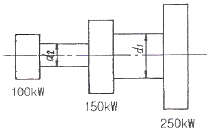
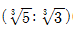
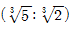
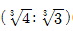
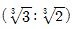
(정답률: 29%)
6. 40kN의 인장하중을 받는 지름 40mm의 알루미늄 봉의 단위 체적당의 탄성에너지는 약 몇 N·m/m3인가? (단, 알류미늄의 탄성계순는 72GPa이다.)
- 17020
- 6515
- 1702
- 7036
(정답률: 33%)
7. 그림과 같은 10mm×10mm의 정사각형 다면을 가진 강봉이 축압압력 P=60kN을 받고 있을 때 사각형 요소 A가 30° 경사 되었을 때 그 표면에 발생하는 수직 응력은 약 몇 MPa인가?
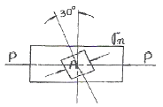
- -120
- -150
- -300
- -450
(정답률: 39%)
8. 그림과 같이 지름 d인 강철봉이 안지름 d, 바깥지름 D인 동관에 끼워져서 두 강체 평판 사이에서 압축되고 있다. 강철봉 및 동관에 생기는 응력을 각각 σsσc라고 하면 응력의 비(σs/σc)의 값은? (단, 강철 및 동의 탄성계수는 각각 Es=200GPa, Ec=120GPa이다.)
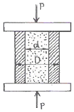
- 5/3
- 3/5
- 4/5
- 5/4
(정답률: 48%)
9. 지름 200mm인 축이 120rpm으로 회전되고 있다. 2m 떨어진 두 단면에서 측정한 비틀림 각이 1/15rad이었다면 이 축에 작용하고 있는 비틀림 모멘트는 약 몇 kNm인가? (단, 전단 탄성계수는 80GPa이다.)
- 418.9
- 356.6
- 6⑤.7
- 286.8
(정답률: 50%)
10. 단면적이 4cm2인 강봉에 그림과 같이 하중이 작용할 때 이 봉은 약 몇 cm 늘어나는가? (단, 탄성계수 E=210GPa이다.)
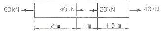
- 0.24
- 0.002
- 0.80
- 0.015
(정답률: 46%)
11. 그림과 같은 삼각형 단면의 꼭지점과 밑변의 굽힘응력의 비 lσcl/lσtl는 얼마인가?
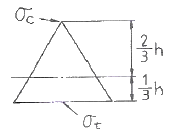
- 2
- 3
- 4
- 1/3
(정답률: 30%)
12. 직사각형 [b×h] 단면을 가진 보의 곡률(1/p)에 관한 설명으로 옳은 것은?
- 폭(b)의 2승에 반비례한다.
- 폭(b)의 3승에 반비례한다.
- 높이(h)의 2승에 반비례한다.
- 높이(h)의 3승에 반비례한다.
(정답률: 52%)
13. 재료의 인장시험에 관련된 다음의 설명 중 틀린 것은?
- 인성계수(modulus of loughness)는 시편이 끊어질 때까지 단위체적의 재료가 흡수한 에너지를 뜻한다.
- 레질리언스 계수(modulus of resilience)는 비례한도까지 단위체적의 재료가 흡수한 에너지를 뜻한다.
- 내킹(necking)이 발생하기 전까지는 시편의 단면적이 균일하게 감소한다.
- 극한 인장응력(ultimate tensile stress)은 인장시험에서 항복이 발생하는 응력값을 뜻한다.
(정답률: 30%)
14. 그림과 같은 외팔보의 자유단에서 우력 M=Ph가 작용할 때 자유단에서의 경사각 (θB)과 처짐(yB)은? (단, E:탄성계수, I는 단면 2차 모멘트이다.)
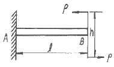
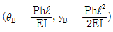
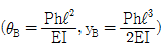
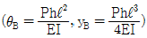
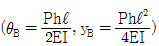
(정답률: 38%)
15. 그림과 같은 트러스에서 부재 AB가 받고 있는 힘의 크기는 몇 N 정도인가?
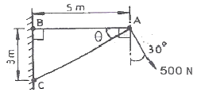
- 781
- 894
- 972
- 1081
(정답률: 46%)
16. 400rpm으로 회전하는 바깥지름 60mm, 안지름 40mm인 중공 단면축이 10kW의 동력을 전달할 때 비틀림 각도는 얼마 정도인가? (단, 전단 탄성계수 G=80GPa, 축 길이 L=3m)
- 0.2°
- 0.5°
- 0.7°
- 1°
(정답률: 46%)
17. 직경이 1.2m, 두께가 10mm인 구형 압력용기가 있다. 용기 재질의 허용 인장응력이 42MPa일 때 적정 사용 내압은 몇 MPa인가?
- 1.1
- 1.4
- 1.7
- 2.1
(정답률: 46%)
18. 포와송 바를 ν, 전단 탄성계수를 G 라 할 때, 탄성계수 Ε를 나타내는 식은?
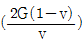
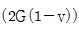
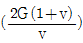
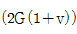
(정답률: 56%)
19. 그림과 같은 단면을 가진 축의 도심점에 대한 극 2차 모멘트는 약 몇 cm4 인가?
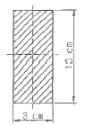
- 253
- 273
- 303
- 323
(정답률: 32%)
20. 그림과 같은 단면을 가진 외팔보가 있다. 그 단면에 전단력 F = 40kN 발생하였다면 a-b 위에 발생하는 전단응력은 약 몇 MPa 인가?
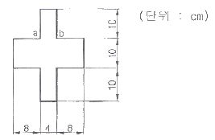
- 2.87
- 3.09
- 3.88
- 4.26
(정답률: 33%)
2과목: 기계열역학
21. 저온실로부터 46.4kW의 열을 흡수할 때 10kW의 동력을 필요로 하는 냉동기가 있다면, 이 냉동기의 성능계수?
- 4.64
- 5.65
- 56.5
- 46.4
(정답률: 48%)
22. 공기 표준 Brayton 사이클로 작동하는 이상적인 가스터빈이 있다. 이 터빈의 압축기로 0.1 MPa, 300 k의 공기가 들어가서 0.5 MPa로 압축된다. 이 과정에서 175kJ/kg의 일이 소요된다. 열교관기를 통해 627kJ/kg의 열이 들어가 공기를 1100 K로 가열한다. 이 공기가 터빈을 통과하면서 406kJ/kg의 일을 얻는다. 이 시스템의 열효율은?
- 0.28
- 0.37
- 0.50
- 0.65
(정답률: 28%)
23. 열역학 과정을 비가역으로 만드는 인자가 아닌 것은?
- 마찰
- 열의 일당량
- 유한한 온도 차에 의한 열전달
- 두 개의 서로 다른 물질의 혼합
(정답률: 31%)
24. 30℃에서 비체적(specific volume)이 0.001 m3/kg인 물은 100 kPa의 입력에서 800 kPa의 압력으로 압축한다. 비체적이 일정하다고 할 때, 이 펌프가 하는 일을 구하면?
- 167 J/kg
- 602 J/kg
- 700 J/kg
- 1400 J/kg
(정답률: 48%)
25. 그림과 같은 카르노사이클의 1,2,3,4점에서의 온도를 T1,T2,T3,T4 라 할 때 이 사이클의 효율은 어떻게 표시되는가?
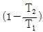
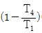
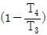
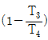
(정답률: 29%)
26. 400℃ 외 20℃ 사이에 작동하는 카르노 사이클 열기관의 열효율은 얼마인가?
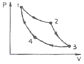
- 76%
- 66%
- 56%
- 44%
(정답률: 55%)
27. 체적이 0.1 m3로 일정한 단열 용기가 격막으로 나뉘어 있다, 용기의 왼쪽 절반은 압력이 200 kPa, 온도가 20℃, 이상기체상수가 8.314kJ/kmole-k인 공기(이상기체로 가정함)로 채워져 있으며, 오른쪽 절반은 진공을 유지하고 있다. 격막의 갑작스런 파손으로 인해 공기가 전체적으로 퍼져 나갔다. 이 과정의 엔트로피 변화량은?
- 12.3 J/K
- 23.7 J/K
- 35.2 J/K
- 47.5 J/K
(정답률: 19%)
28. 어떤 유체의 밀도가 741 kg/m3이다. 이 유체의 비체적은 약 몇 m3/kg인가?
- 0.78 × 10-3
- 1.35 × 10-3
- 2.35 × 10-3
- 2.98 × 10-3
(정답률: 54%)
29. 1 kW의 전기히터를 이용하여 101 kPa, 15℃의 공기로 차 있는 100m3의 공간을 난방하려고 한다. 이 공간은 견고하고 밀폐되어 있으며 단열되었다고 가정한다. 히터를 10분 동안 작동시킨 후 이 공간의 온도는 약 몇 도인가?(단, 공기의 정적 비열은 0.718 kJ/kg-k이고, 기체 상수는 0.287kJ/kgK이다.)
- 20℃
- 22℃
- 24℃
- 26℃
(정답률: 36%)
30. 어느 발명가가 바닷물로부터 매시간 1800 kJ의 열량을 공급받아 0.5 kW 출력의 열기관을 만들었다고 주장 한다면, 이 사실은 열역학 제 몇 법칙에 위반 되겠는가?
- 제 0법칙
- 제 1법칙
- 제 2법칙
- 제 3법칙
(정답률: 48%)
31. 가역열기관이 1000℃의 열원과 300 K 의 대기 사이에 작동한다. 이 열기관이 사이클 당 100 kJ의 일을 할 경우 사이클 당 1000℃의 열원으로부터 받은 열량은?
- 70.0 kJ
- 76.4 kJ
- 130.8 kJ
- 142.9 kJ
(정답률: 34%)
32. 밀폐계가 가역정압 변화를 할 때 계가 받은 열량은?
- 계의 엔탈피 증가량과 같다.
- 계의 내부에너지 증가량과 같다.
- 계의 내부에너지 감소량과 같다.
- 계가 주위에 대한 한 일과 같다.
(정답률: 48%)
33. 밀폐시스템에서 초기 상태가 300 K, 0.5 m3인 공기를 등온과정으로 150 kPa에서 600 kPa까지 천천히 압축하였다. 이 과정에서 공기를 압축하는데 필요한 일은 약 몇 kJ인가?
- 104
- 208
- 304
- 612
(정답률: 43%)
34. 냉매로서 갖추어야 될 요구 조건으로 적합하지 않은 것은?
- 불활성이고 안정하며 비가연성 이어야 한다.
- 비체적이 커야 한다.
- 증발 온도에서 높은 잠열을 가져야 한다.
- 열전도율이 커야한다.
(정답률: 32%)
35. 계 내의 임의의 이상기체 1 kg이 채워져 있다. 이상 기체의 정암비열은 1.0 kJ/kg·K이고, 기체 상수는 0.3 kJ/kg·K이다. 압력 100 kPa, 온도 50 ℃의 초기 상태에서 채적이 두 배로 증가할 때까지 기체를 정압과정으로 팽창시킬 경우, 필요한 열량은 약 몇 kJ인가?(단, 비령비 = 1.43 이다.)
- 226
- 323
- 96
- 419
(정답률: 23%)
36. 시스템의 온도가 가열과정에서 10℃에서 30℃로 상승하였다. 이 과정에서 절대온도는 얼마나 상승하였는가?
- 11 k
- 20 k
- 293 k
- 303 k
(정답률: 46%)
37. 어는 이상기체 2 kg이 압력 200 kPa, 온도 30℃의 상태에서 체적 0.8 m3를 차지한다. 이 기체의 기체상수는 약 몇 kJ/kg·K 인가?
- 0.264
- 0.528
- 2.67
- 3.53
(정답률: 47%)
38. 다음 중 열역학 제0법칙에 대한 설명으로 옳은 것은?
- 질량 보존의 법칙이다.
- 에너지 보존의 법칙이다.
- 엔트로피 증가에 관한 법칙이다.
- 열평형에 관한 법칙이다.
(정답률: 44%)
39. 열역학 제2법칙에 대한 설명으로 옳은 것은?
- 과정(process)의 방향성을 제시한다.
- 에너지의 양을 결정한다.
- 에너지의 종류를 판단할 수 있다.
- 공학적 장치의 크기를 알 수 있다.
(정답률: 45%)
40. 어떤 이상기체가 진공 중으로 단열 상태에서 자유팽창을 하여 최종부피는 처음부피의 2배로 되었다. 다음 중 틀린 설명은?
- 한 일은 없다.
- 온도의 변화가 없다.
- 엔트로피의 변화가 없다.
- 내부에너지의 변화가 없다.
(정답률: 27%)
3과목: 기계유체역학
41. 지름이 0.4m인 관속을 유량 3m3/s로 흐를 때 평균속도는 약 몇 m/s인가?
- 13.9
- 23.9
- 33.9
- 43.9
(정답률: 54%)
42. 그림과 같은 수문에서 멈춤 장치 A가 받는 힘은 약 몇 kN인가?(단 수문의 폭은 3m이고, 수은의 비중은 13.6이다.)
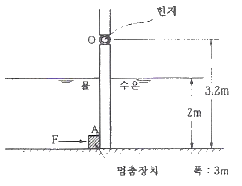
- 37
- 510
- 586
- 879
(정답률: 25%)
43. 부력(buoyant force)을 가장 적합하게 설명한 것은?
- 부양체에 작요하는 합력
- 부양체의 무게에서 배제 체적 무게를 뺀 힘
- 정지 유체 속에 있는 물체표면에 작용하는 표면력의 합력
- 물체에 의해 배제된 체적에 해당하는 물체의 무게
(정답률: 35%)
44. 바람에 수직하게 놓인 지름 40 cm의 원판(disk)이 받는 합력은 0.4 N이었다. 공기 밀도가 1.2 kg/m3이고 항력계수가 1.1 이라면 풍속은 약 몇 m/s인가?
- 0.8
- 1.1
- 1.6
- 2.2
(정답률: 51%)
45. 위의 열린 큰 탱크(tank) 속에 비중량이 γ인 액체가 들어있다. 이 액체의 자유 표면에서 h되는 위치에 있는 단면적 A인 노즐(nozzle)을 통하여 액체가 대기 중으로 분출될 때 탱크가 받는 추력(thrust)은?(단, 유량계수는 1로 가정하며, 마찰손실은 무시한다.)
- γAh
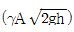
- 2γAh
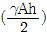
(정답률: 26%)
46. 부차적 손실계수 값이 5인 밸브를 Darcy의 관마찰계수가 0.025이고 지름이 2cm인 관으로 환산한다면 관의 등가 길이는 몇 m인가?
- 4
- 0.4
- 2.5
- 0.25
(정답률: 39%)
47. 그림의 양수펌프에서 입구관 내의 유속은 3 m.s, 출구관 내의 유속은 5m/s, 압력계 1의 압력은 300 mmHg(진공), 압력계 2의 게이지 압력은 3 bar, 송출 유량은 0.5 m3/s이다. 이때 펌프의 출력은 약 몇 kW인가?(단. 모든 손실은 무시한다.)
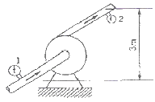
- 15
- 165
- 189
- 377
(정답률: 21%)
48. 밀도가 1000 kg/m3이고 체적탄성계수가 2GPa인 액체내에서 음속은 약 몇 m/s인가?
- 340
- 1000
- 1414
- 2000
(정답률: 45%)
49. 비중이 0.8인 액체를 10m/s 속도로 수직방향으로 분사하였을 때, 도달할 수 있는 최고 높이는 약 몇 m인가?
- 3.1
- 5.1
- 7.4
- 10.2
(정답률: 40%)
50. 직경이 10cm인 관에 공기가 층류 상태로 흐를 수 있는 평균 속도의 최대값은 약 몇 m/s 인가? (단, 공기의 동점성계수 v=25.90×10-6m2/s, 임계레이놀즈수는 2100이다.)
- 1.08
- 1.63
- 0.54
- 0.85
(정답률: 44%)
51. 그림과 같은 두 개의 고정된 평판 사이에 얇은 판이 있다. 얇은 판 상부에는 점성계수가 0.⑤N·s/m2인 유체가 있고 하부에는 점성계수가 0.1N·s/m2인 유체가 있다 이 판을 일정속도 0.5m/s로 끌 때, 끄는 힘이 최소가 되는 y는? (단, 고정 평판사이의 폭은 h(m), 평판들 사이의 속도 분포는 선형이라고 가정한다.)
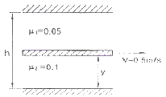
- 0.293h
- 0.5h
- 0.586h
- 0.87h
(정답률: 22%)
52. 중력가속도 g, 체적유량 Q, 길이 L로 얻을 수 있는 무차원수는?
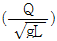
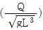
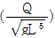
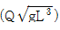
(정답률: 26%)
53. 경계층(boundary layer)에 관한 설명 중 틀린 것은?
- 경계층 바깥의 흐름은 포텐셜 흐름에 가깝다.
- 균일 속도가 크고, 유체의 점성이 클수록 경계층의 두께는 얇아진다
- 경계층 내에서는 점성의 영향이 크다.
- 경계층은 평판 선단으로부터 하류가 갈수록 두꺼워진다.
(정답률: 46%)
54. 점성계수의 차원은? (단, F는 힘. M은 질량, L은 길이, T는 시간의 차원이다.)
- [FL2T]
- [ML-1T-1]
- [L2T2]
- [L2T-1]
(정답률: 29%)
55. 다음 중 2차원 정상 비압축성 유동의 x, y 방향 속도 성분 u, v로 가능한 것은?
- u=4xy+y2, v=6xy+3x
- u=6xy+3x, v=4xy+y2
- u=2x2+y2, v=-4xy
- u=-4xy, v=2x2+y2
(정답률: 39%)
56. 직경 2.5cm의 수평 원관(circular pipe)을 흐르는 물의 유동이 길이 5m 당 4kPa의 압력손실을 갖는다. 관의 벽면 전단응력(wall shear stress)은 몇 Pa인가?
- 2
- 3
- 4
- 5
(정답률: 25%)
57. 비중 S인 액체의 자유표면으로부터 깊이가 h m인 곳의 계기 압력은 수은주의 높이로 몇 mm인가? (단, 수은의 비중은 13.6이다.)
- 13600Sh
- 13.6Sh
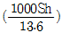
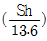
(정답률: 20%)
58. 동쪽을 x축 (+)방향, 북쪽을 y축 (+)방향으로 하는 2창원 직각 좌표계에서 2m/s의 일정한 속도로 불어오는 남동풍에 대응하는 속도 포텐셜은? (단, 속도포텐셜 ø는
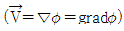
로 정의한다.- ø=√2x+√2y+상수
- ø=-√2x+√2y+상수
- ø=2x-2y+상수
- ø=2x+2y+상수
(정답률: 27%)
59. 항구의 모형을 400:1로 축소 제작하려고 한다. 조수간만의 주기가 12시간이면 모형 항구의 조수 간만의 주기는 몇 시간이 되어야 하는가?
- 0.⑤
- 0.1
- 0.4
- 0.6
(정답률: 28%)
60. 다음 그림과 같은 상태에서 관로를 흐르는 물의 속도는 약 몇 m/s인가?
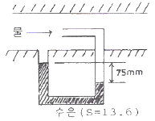
- 3.4
- 34
- 0.43
- 4.3
(정답률: 40%)
4과목: 기계재료 및 유압기기
61. 배빗메탈(babbit metal)에 관한 설명으로 옳은 것은?
- Sn-Sb-Cu계 합금으로서 베어링재료로 사용된다.
- Al-Cu-Mg계 합금으로서 상온시효 경화시키면 기계적 성질이 개선된다.
- Cu-Ni-Si계 합금으로서 도전율이 좋으므로 강력도전 재료로 이용된다.
- Zn-Cu-Ti계 합금으로서 강도가 현저히 개선된 경화형 합금이다.
(정답률: 73%)
62. 합금 중 톱날이나 줄의 재료로 가장 적합한 재료는?
- 구리
- 저탄소강
- 고탄소강
- 구상흑연주철
(정답률: 60%)
63. 스테인리스강의 주요 합금 성분에 해당되는 것은?
- 크롬과 니켈
- 니켈과 텅스텐
- 크롬과 망간
- 크롬과 텅스텐
(정답률: 52%)
64. 탄소강에 함유되어 있는 원소 중 많이 함유되면 적열취성이 원인이 되는 것은?
- 인
- 규소
- 구리
- 황
(정답률: 74%)
65. 철강재료의 열처리에서 많이 이용되는 S곡선이란 어떤 것을 의미하는가?
- T.T.L 곡선
- S.S.C 곡선
- T.T.T 곡선
- S.T.S 곡선
(정답률: 70%)
66. 자경성(self-hardening)이 가장 우수한 합금원소는?
- Ni
- Cr
- Mn.
- Mo
(정답률: 28%)
67. 금속의 냉각속도가 빠르면 조직은 어떻게 변하는가?
- 결정입자가 미세해진다.
- 냉각속도와 금속의 조직과는 관계가 없다.
- 금속의 조직이 조대해 진다.
- 소수의 핵이 성장해서 응고 된다.
(정답률: 58%)
68. 다음 중 경화된 재료에 인성을 부여하기 위해서 A1 변태점 이하로 재가열하여 행하는 열처리는?
- 침탄법
- 담금질
- 뜨임
- 질화법
(정답률: 70%)
69. S 성분이 적은 선철을 용해로, 전기로에서 용해한 후 주형에 주입 전 마그네슘, 세륨, 칼슘 등을 첨가시켜 흑연을 구상화 한 것은?
- 합금주철
- 구상흑연주철
- 질드주철
- 가단주철
(정답률: 76%)
70. 실용금속 중 비용이 가장 작아 항공기 부품이나 전자 및 전기용 제품의 케이스 용도로 사용되고 있는 합금재료는?
- Ni 합금
- Cu 합금
- Pb 합금
- Mg 합금
(정답률: 66%)
71. 부하의 낙하를 방지하기 위해서 배압을 유지하는 압력 제어 밸브는?
- 카운터 밸런스 밸브(counter balance valve)
- 강압 밸브(pressure-reducing valve)
- 시?스 밸브(sequence valve)
- 언로딩 밸브(unloading valve)
(정답률: 76%)
72. 유압 실린더의 속도 제어 회로가 아닌 것은?
- 로크 회로
- 미터인 회로
- 미터아웃 회로
- 블리드 오프 회로
(정답률: 74%)
73. 가변 용량형 베인펌프에 대한 설명으로 틀린 것은?
- 로터와 링 사이의 편심량을 조절하여 토출량을 변화시킨다.
- 유압회로에 의하여 필요한 만큼의 유량을 토출할 수 있다
- 펌프의 수명이 길고 소음이 적은 편이다.
- 토출량 변화를 통하여 온도 상승을 억제시킬 수 있다.
(정답률: 45%)
74. 다음 그림은 유압 기호에서 무엇을 나타내는 것인가?
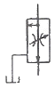
- 강압 밸브
- 바이패스형 유량조정 밸브
- 짐류 밸브
- 릴리프 밸브
(정답률: 73%)
75. 체크 밸브, 릴리프 밸브 등에서 압력이 상승하고 밸브가 열리기 시작하여 어느 일정한 흐름의 양이 확인되는 압력을 의미하는 용어는?
- 서지 압력
- 게이지 압력
- 크래킹 압력
- 리시트 압력
(정답률: 65%)
76. 보기와 같은 유압 잭에서 지름(D)이 D2=2D1일 때 누르는 힘 F1과 F2의 관계를 나타낸 식으로 올바른 것은?
- F2=F1
- F2=2F1
- F2=4F1
- F2=(1/4)F1
(정답률: 60%)
77. 실린더 안을 왕복 운동하면서 유체의 압력과 힘의 주고 받음을 하기 위한 지름에 비하여 길이가 긴 기계 부품은?
- spool
- land
- port
- plunger
(정답률: 62%)
78. 그림과 같은 유압회로의 명칭으로 가장 적합한 것은?
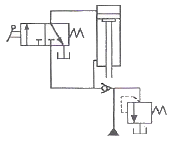
- 감속회로
- 강압회로
- 언로드회로
- 로크회로
(정답률: 63%)
79. 어큐물레이터는 고압 용기이므로 장착과 취급에 각별한 주의가 요망된다. 이에 관련된 설명으로 틀린 것은?
- 점검 및 보수가 편리한 장소에 설치한다.
- 어큐물레이터에 용접, 가공, 구멍뚫기 등은 금지한다.
- 충격 완충용으로 사용할 경우는 가급적 충격이 발생하는 곳으로부터 멀리 설치한다.
- 펌프와 어큐물레이터와의 사이에는 체크 밸브를 설치하여 유압유가 펌프 쪽으로 역류하는 것을 방지한다.
(정답률: 66%)
80. 압력 6.86MPa, 토출량 60ℓ/min, 회전수가 1200rpm인 유압 펌프가 소요동력이 8kW일 때 펌프의 전효율은 약 몇 %인가?
- 75%
- 82%
- 86%
- 90%
(정답률: 32%)
5과목: 기계제작법 및 기계동력학
81. 구성인선(built-up edge)이 생기는 것을 방지하기 위한 대책은?
- 마찰계수가 큰 공구를 사용한다.
- 절삭속도를 작게 한다.
- 윤활성이 작은 윤활유를 사용한다.
- 절삭 깊이를 작게 한다.
(정답률: 51%)
82. 딥 드로잉(deep drawing)에서 제품(용기)의 높이가 40mm, 용기 밑부분의 지름이 30mm인 제품을 가공하려고 한다. 필요한 소재의 지름은 약 몇 mm 이어야 하는가? (단, 제품과 소재의 두께는 고려하지 않는다.)
- 55mm
- 65mm
- 75mm
- 85mm
(정답률: 26%)
83. 선반에 이용되는 가공을 고정기구가 아닌 것은?
- 척(chuck)
- 면판(face plate)
- 바이스(vise)
- 심봉(mandrel)
(정답률: 36%)
84. 각도 측정게이지에 해당되지 않는 것은?
- 하이트 게이지(height gauge)
- 오토콜리메이터(auto-collimator)
- 수준기(precision level)
- 사인 바(sine bar)
(정답률: 40%)
85. 주조용 목형에 구배를 만드는 가장 중요한 이유는?
- 쇳물의 주입이 잘되게 하기 위하여
- 주형에서 목형을 쉽게 뽑기 위하여
- 목형을 튼튼히 하기 위하여
- 목형을 지지하기 위하여
(정답률: 50%)
86. 200mm의 사인바로 게이지 블록 42mm를 사용하여 피측정물의 경사면이 정반과 평행을 이루었을 때 피측정물 경사면의 각도 α는?
- 약 30.⑤°
- 약 21.21°
- 약 12.12°
- 약 25.25°
(정답률: 33%)
87. 강을 임계온도 이상의 상태로부터 물 또는 기름과 같은 냉각제 중에 급냉시켜서 강을 경화시키는 작업은?
- 풀림
- 불림
- 담금질
- 뜨임
(정답률: 42%)
88. 다음 가공법 중 연삭 입자를 사용하지 않는 것은?
- 방전가공
- 초음파가공
- 액체호닝
- 래핑
(정답률: 50%)
89. 특수 드로잉 가공에서 다이 대신 고무를 사용하는 성형 가공법은 어느 것인가?
- 액압성형법(hydroforming)
- 마폼법(marforming)
- 벌징법(bulging)
- 폭발성형법(explosive forming)
(정답률: 58%)
90. 불활성 가스 아크용접의 특징이 아닌 것은?
- 산화, 질화를 방지 할 수 있다.
- 청정효과를 위해 용제를 사용한다.
- 열의 집중이 좋아 용접능률이 좋다.
- 철금속 뿐만 아니라 비철금속까지 용접이 가능하다.
(정답률: 40%)
91. 스프링으로 매단 물체가 수직 상하 방향으로 매초 20회 최고 위치에 도달하며 진동할 때 고유 각진동수 ω는 약 몇 rad/s 인가?
- 12
- 5
- 126
- 250
(정답률: 47%)
92. 어떤 진동체의 진동수가 360rpm이고 최대 가속도가 8m/s2이면 변위의 진폭은 약 몇 cm인가?
- 0.28
- 0.56
- 2.25
- 22.2
(정답률: 30%)
93. 질량 1300kg의 자동차가 정지 상태에서 출발하여 5초 후 속력이 36km/h이었다 5초동안 가해진 힘의 평균은 몇 N인가?
- 1300
- 1560
- 1960
- 2600
(정답률: 25%)
94. 일률(power)에 대한 설명 중 틀린 것은?
- 단위시간당 행해진 일의 양이다.
- 힘과 속도는 내적(inner product)이다.
- 토크(torque)와 각속도의 내적(inner product)이다.
- 단위는 N·m/s2이다.
(정답률: 38%)
95. 무게 10kN의 해머(hammer)를 10m의 높이에서 자유 낙하시켜서 무게 300N의 말뚝을 50cm 박았다. 충돌한 직후에 해머와 말뚝은 일체가 된다 이때의 속도는 몇 m/s인가?
- 50.4
- 20.4
- 13.6
- 6.7
(정답률: 28%)
96. 조화 가진되는 점성 감쇠 1 자유도계에서 한 사이클 당 손실되는 에너지는 얼마인가? (단, 정상 상태의 변위는 x=Xsin(ωt-ø)이고, 감쇠력은 Fd=cx이다.)
- πcX
- πcωX
- πcX2
- πcωX2
(정답률: 9%)
97. 가속도 a로 움직이는 프레임 B에 대한 슬라이더 A의 상대가속도는 얼마인가? (단, 슬라이더는 프레임 내부의 막대를 따라 움직이며 모든 마찰은 무시한다.)
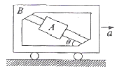
- gsinθ-acosθ
- gcosθ-asinθ
- gsinθ+acosθ
- gcosθ+asinθ
(정답률: 11%)
98. 강제진도에서 정상상태의 진폭이나 위상과 전혀 관계가 없는 것은?
- 기진력의 진동수
- 감쇠계수
- 초기조건
- 기진력의 진폭
(정답률: 37%)
99. 크랭크 암(crank arm) AB가 A점을 중심으로 각속도 로 회전한다. 그림의 위치에서 피스톤 핀 P의 속도는? (단, )
- 왼쪽 방향 100m/s
- 왼쪽 방향 200m/s
- 오른쪽 방향 300m/s
- 왼쪽 방향 400m/s
(정답률: 25%)
100. 지표면으로부터 500km 상공에 있는 인공위성의 지구의 중력에 의한 가속도는 약 몇 m/s2인가? (단, 지구의 반경은 6371km 이다.)
- 7.81
- 8.43
- 8.81
- 9.81
(정답률: 24%)
σ_max = Mc/I
여기서 M은 단면의 중립축에 대한 모멘트, c는 중립면에서 가장 먼 지점까지의 거리, I는 단면의 중립축에 대한 단면 2차 모멘트이다.
이 문제에서는 등분포하중을 받으므로, 모멘트는 다음과 같이 구할 수 있다.
M = (1/2)ωL^2
여기서 L은 보의 길이이다.
또한, 원형단면의 2차 모멘트는 다음과 같이 구할 수 있다.
I = (π/4)d^4
여기서 d는 단면의 지름이다.
따라서 최대 응력은 다음과 같다.
σ_max = (2ωL^2)/(πd^3)
이 문제에서는 허용응력이 800Pa이므로, 다음의 부등식을 만족해야 한다.
(2ωL^2)/(πd^3) ≤ 800
여기서 주어진 등분포하중은 10N/m이므로, 위의 부등식은 다음과 같이 변형할 수 있다.
(20L^2)/(πd^3) ≤ 800
d^3 ≤ (20L^2)/(π×800)
d^3 ≤ 0.025L^2
따라서 단면의 지름은 다음과 같이 구할 수 있다.
d ≥ (0.025L^2)^(1/3)
여기서 주어진 보의 길이는 3m이므로, 최소 지름은 다음과 같다.
d ≥ (0.025×3^2)^(1/3) ≈ 3.3mm
따라서 정답은 "330"이다.